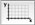

When a new image is inserted into the document, or when selecting (⌘0), a dialog appears where the user can choose its preferred way to adjust the coordinates. (To prevent this dialog from appearing on each insertion, uncheck the corresponding option in the (⌘,) window under General.)
After choosing the desired option, the must select a set of positions (either a point or a side, as indicated on the bottom line of the window), entering after each click the corresponding coordinate(s).
The user selects the four sides of the graph.
The user selects the origin of the graph followed by the right and top sides of the graph.
The user selects two opposite corners of the graph.
The user selects the origin of the graph, followed by the rightmost point on the x-axis and the topmost point of the y-axis. This option is especially useful if the axes are not perpendicular.
The user selects the origin of the graph, followed by the rightmost point on the x-axis, the topmost point of the y-axis and the right-hand corner. This option is especially useful if the graph is deformed.
This option allows the user to modify only one axis.
Shifts the origin to the selected position.
The user selects two points on the graph and then enters the length of the line connecting these two points. This option is especially useful when digitizing points on maps (i.e. when distances along the x and y axes are the same).
The position of the coordinate limits are indicated by the dotted frame. This coordinate frame can be modified by selecting the corresponding tool ().
With this tool, you can:
To restore the default rectangular frame, select . To adjust the frame so that each pair of sides is parallel, select .
The coordinate limits and scales can be modified in the Coordinates Inspector. To display the inspector, select (⇧⌘I) and click on the Coordinates icon:

. The different available scales are:To use the pixel coordinates, check the corresponding option in the Coordinates Inspector.
If your graph contains two y-axes, check the option Use Two Ordinate Axes in the Coordinates Inspector. You can then assign each data set to either axis by using the menu which appears above the coordinate limits.